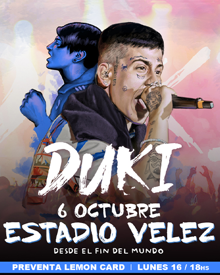
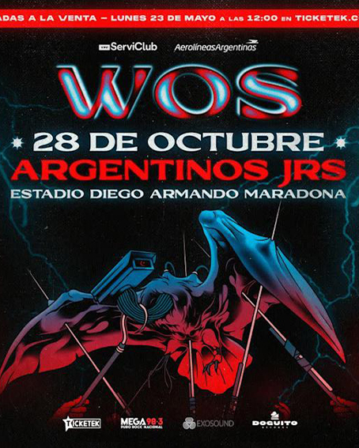
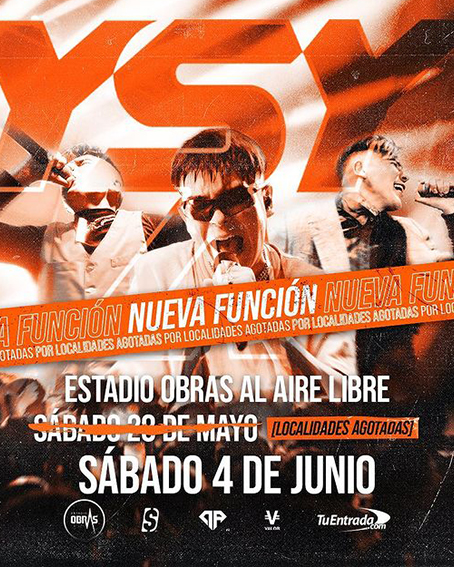
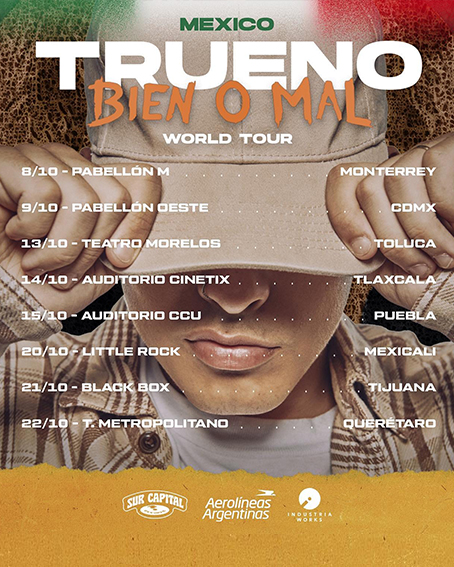
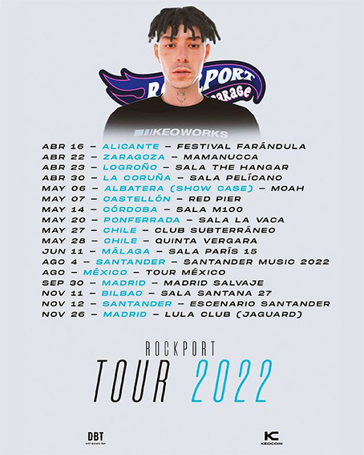
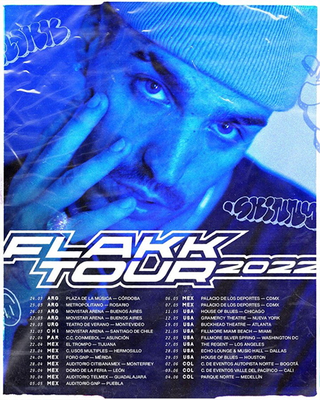
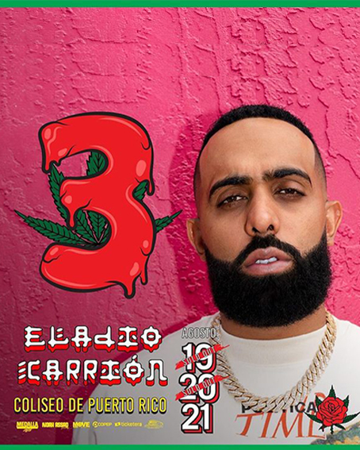
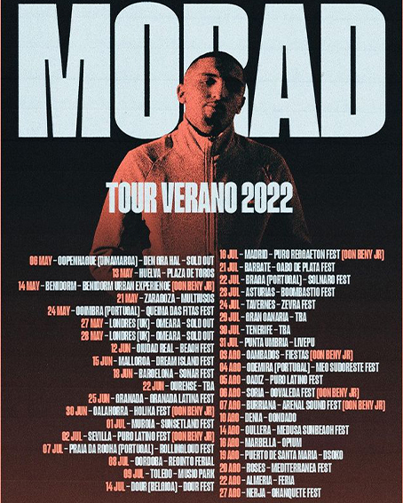

Eventos
Duki estadio Vélez

Duki le puso fin al misterio y anunció un show para el 6 de octubre en el estadio de Vélez Sarsfield, lugar al que fue a su primer recital junto a su papá para ver a Charly García en 2009. “Es increíble lo que crecimos pero esto recién arranca. Esto que estamos viendo ahora y el Vélez son las primeras diez páginas del libro. Es así de simple: tengo 25 años, la mayoría de los pibes tienen menos. Recién arrancamos todos y recién ahora estamos arriba de la ola; todavía no arrancamos a surfear. Faltan muchísimas cosas”, dijo. Respecto al show, adelantó que será una “recopilación” de lo mejor de su carrera: “Van a estar todas las facetas de Duki”, adelantó Mauro Ezequiel Lombardo Quiroga, de 25 años, quien con su primer single “No Vendo Trap” viene siendo la cara más potente del movimiento urbano argentino y un puntal fundamental en su expansión internacional
Bad Bunny en Argentina

Bad Bunny vuelve a la Argentina para presentarse en una doble fecha en el Estadio Vélez Sarsfield y los fanáticos agotaron todas las entradas en cuestión de horas. El anuncio del esperado regreso del cantante puertorriqueño al país generó una alta expectativa entre sus seguidores. Al principio, el líder mundial del trap y el reguetón iba a dar un único show en Buenos Aires, el viernes 4 de noviembre. Pero la increíble demanda -los tickets se agotaron en 60 minutos- obligó a los productores a programar una segunda función de inmediato.
Wos estadio Argentinos Juniors

El viernes 28 de octubre, Valentín Oliva, más conocido como Wos, volverá a pisar un escenario en la Ciudad de Buenos Aires. Después de girar por todo el país con la presentación de su disco “Oscuro Éxtasis” con el que recorrió más de once ciudades argentinas, redoblará su arrasadora propuesta para hacer un repaso por toda su discografía acompañado por una banda que la completan Natasha Iurcovich en bajo, Facundo Yalve en guitarra, Fran Azorai en Teclados y Tomás Sainz en batería. En lo que resta del año, Wos continuará con su gira en España y sumará nuevas presentaciones en Latinoamérica.
Otros shows






